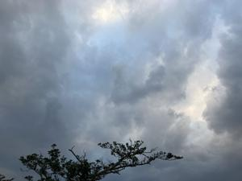
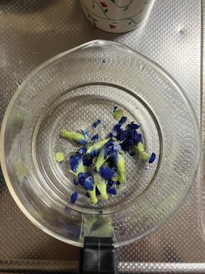
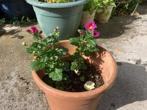

うるがいの話 ある日
最新: 冷蔵庫のバタフライピーの花【うるがいの話 ある日】とは 一日だけのプログです
『うるがいの話』の最新一日だけのプログで、通信料が少なく経済的だ。カニの画像をクリックすると全ての日付が載る『うるがいの話』サイトを表示します
|
|
【うるがいの話】 うるがい(ｳﾙｶﾞｲ urugai)とは、『もずくがに』の名前でとても大きくなります。 |
|---|---|
|
|
【カミマヤーの話】 猫のことを方言でマヤーといいます。カミマヤー（kamimayaa）とは、神の猫のことです。 |
|
【たながぁの音楽】 たながぁ（ﾀﾅｶﾞｰ tanagaa）とは手長えびのことで、何種類かあり大きいのは車 エビぐらいになります。 |

|
【ぶながぁの話】 ぶながぁ(ﾌﾞﾅｶﾞｰ bunagaa)とは、赤い髪の毛、赤い身体、そして身長は１ｍ２０ｃｍ ぐらい、川の蟹を食べているの目撃された。場所は沖縄県国頭郡大宜味村のと ある村僕の隣近所に住んでいる爺さんから、聞いた話です。 |
|
|
【ギーマの話】 ギーマ(giima)とは、山原の里山に咲くスズランに似た、 花を付けます。実は食べられます、 気が付くと口の周りが紫になっています。 |
2024年12月29日 (日）冷蔵庫のバタフライピーの花
16:05

何カ月だろうか、最後に残った冷蔵庫のバタフライピーの花を使う。花
びらが、崩れてしまっている。フーム、冷蔵庫への保管は一カ月程度が
限界とみたほうがいいかも。

天気がいいので明日、しめ縄を玄関に飾るため玄関の表を水で洗い流す
。門松のために明日家に来る甥っ子に、ヤンバルから松と竹を持って来
てと電話したら、ヨメに喪中だからダメ！と言われた。ヨメ家の不幸だ
けど、うるがい家は関係ないのではと思ったが、来年の門松はやめにし
た。しめ縄はいいのかしら？

ひと月ほど前か、一鉢４５円の小菊を二つ、つぼみのとき買った。花が
開き始めた。先週の金曜日（１２月２７日）生協から、正月飾りの花が
届いた。大菊のはずだか、直径４センチほどのサイズでヨメは怒ってい
た。来年は、直接店頭で花をみて買うことすると決意していた。